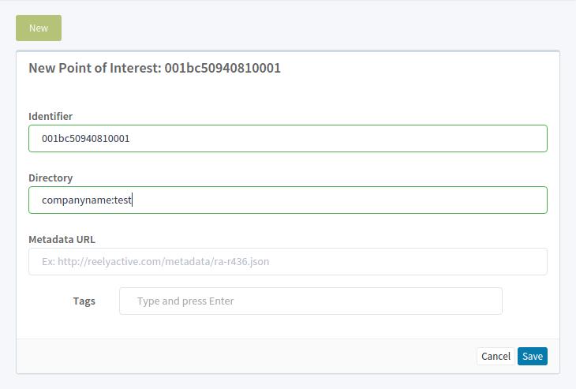

Connect sensors to Pareto
the Enterprise Cloud Platform from reelyActive
Connect your sensor in three easy steps
Your computer will relay the sensor data to the Pareto cloud platform
1. Install Node.js
Install Node.js on the computer to which your sensors will be connected. We recommend you install the LTS version.
2. Install barnowl-relay
Once the Node.js installation completes, open a terminal or command prompt and enter:
npm install -g barnowl-relay
3. Connect and run
With the minimal starter kit plugged in to the USB port of your computer, enter via the terminal:
barnowl-relay -s -h cloud.reelyactive.com
Configure your sensor in Pareto
Pareto will display the sensor data in a semantically meaningful way

Add the sensor as a new POI
- select the Points of Interest screen from the left menu
- click New
- enter the identifier on the back of the sensor (lowercase, no separators)
- enter the two-part directory in the format companyname:test (for example: acme:test)
- click save
Observe the dashboard
- select the Dashboard screen from the left menu
- select your directory (ex: acme) from the pull-down
- observe the real-time data from the test sensor